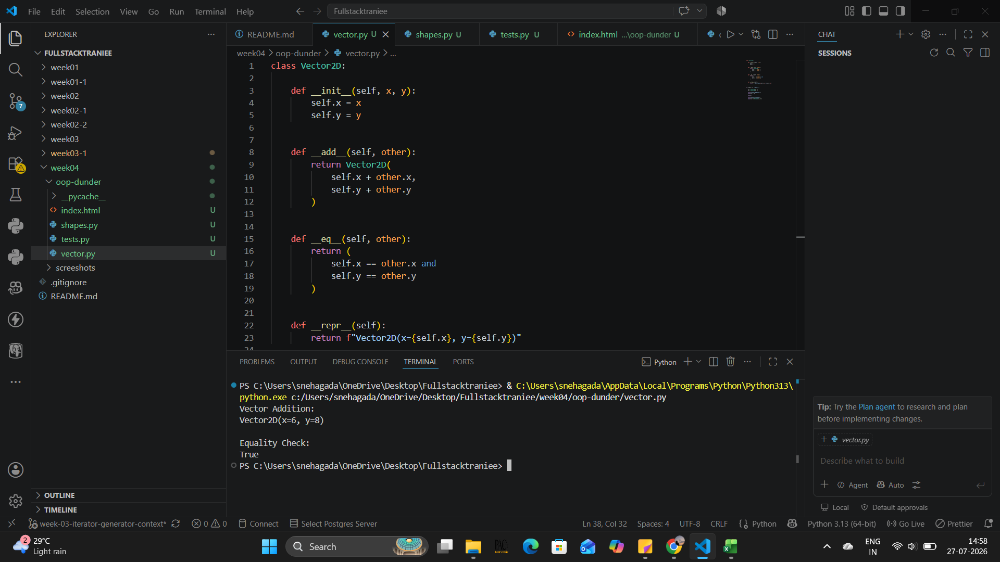
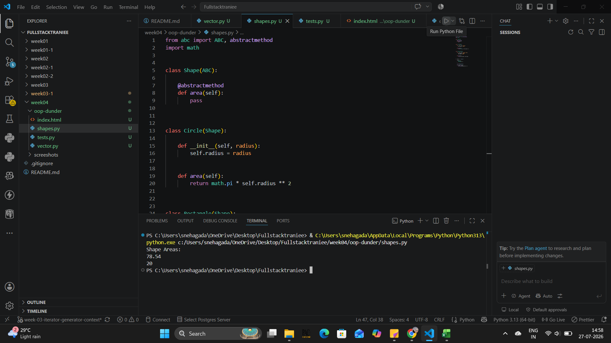
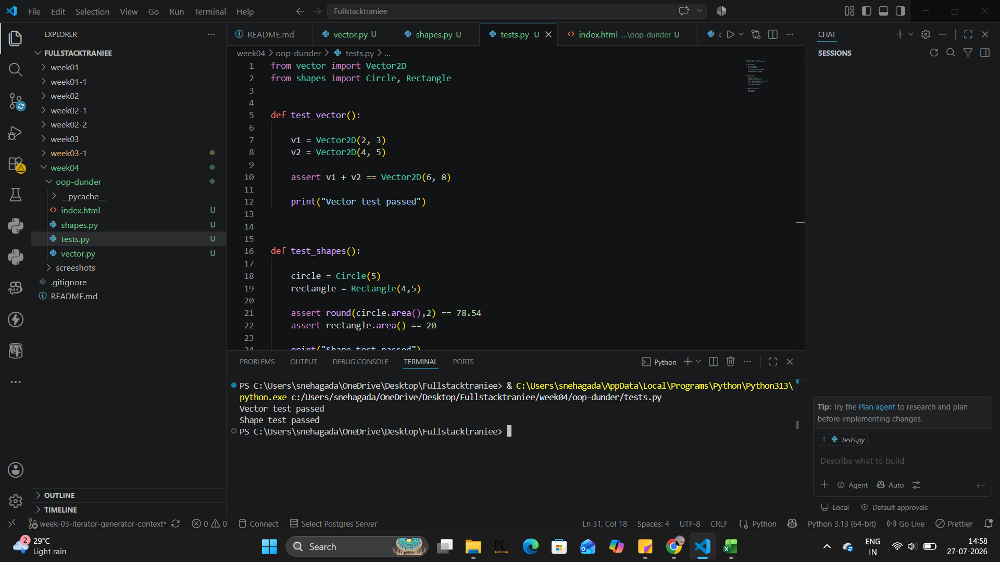

This week focused on Python Object-Oriented Programming concepts, including classes, inheritance, polymorphism, abstraction, dunder methods, and abstract base classes.
Implemented a Vector2D class to understand operator overloading using dunder methods like __add__, __eq__, and __repr__. The class behaves similar to Python built-in numeric types.

Created an abstract Shape class using the abc module. Implemented Circle and Rectangle classes to demonstrate inheritance, abstraction, and polymorphism using the area() method.

Verified the implementation using test cases for vector operations and shape calculations.
